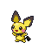

-
Bulbasaur #001

- Grama
- Veneno
Há uma semente de planta em suas costas desde o dia que este Pókemon nasceu. A semente cresce lentamente.
-
Ivysaur #002

- Grama
- Veneno
Quando o bulbo em suas costas cresce, parece perder a capacidade de ficar em pé em suas patas traseiras.
-
Venusaur #003

- Grama
- Veneno
Sua planta florece quando esta absorvendo energia solar. Ele permanece em movimento para buscar a luz solar.
-
Charmander #004

- Fogo
Tem preferência por coisas quente. Quando chove, diz-se que o vapor jorra da ponta de sua cauda.
-
Charmeleon #005

- Fogo
Tem uma natureza bárbara. Na batalha ele chicoteia sua cauda ardente e cortra com garras afiadas.
-
Charizard #006

- Fogo
- Voador
Ele cospe fogo que é quente o suficiente para derreter pedregulhos.Pode causar incêndios florestais soprando chamas.
-
Squirtle #007

- Água
Quando ele retrai seu longo pescoço em sua concha, ele esguicha água com força vigorosa.
-
Wartortle #008

- Água
É reconhecido como sibolo de longevidade.Se sua concha tem algas, esse Wartoutle é muito é muito antigo.
-
Blastoise #009

- Água
Ele esmagada seu inimigo sob seu corpo pesado para causar desmaios. Em uma pitada, ele se retirará dentro de sua concha.
-
Pichu #172
- Elétrico
É inábil em armazenar energia elétrica. Qualquer tipo de choque faz com que ele descarregue energia espontaneamente..
-
Pikachu #025

- Elétrico
Quando está com raiva, descarrega imediatamente a energia armazenada nas bolsas de suas bochechas.
-
Raichu #026

- Elétrico
Sua cauda descarrega eletricidade no chão, protegendo-o de choques.
-
Buizel #418

- Água
Ele gira suas duas caudas como um parafuso para se impulsionar na água. As caudas também cortam algas marinhas aderentes.
-
Floatzel #419
- Água
É uma visão comum em torno de portos de pesca. É conhecido por resgatar pessoas e ajudar os pescadores a carregar o que pescaram.
-
Snorlax #143

- Normal
Não fica satisfeito a menos que coma mais de 880 libras de comida todos os dias. Quando termina de comer, vai imediatamente dormir.